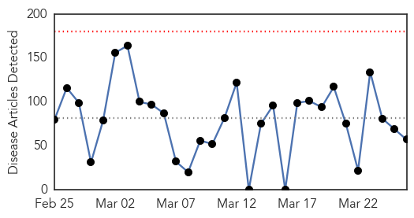
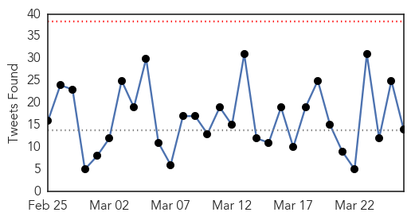
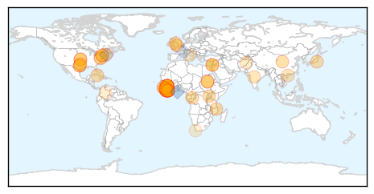
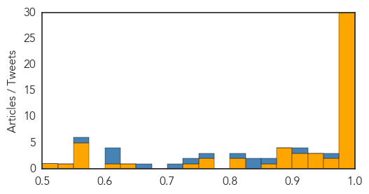
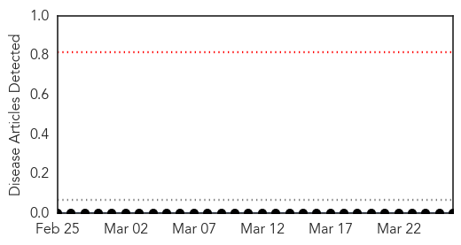

Ebola
30-Day Web Trend
0 alerts, 0 warnings

30-Day Twitter Trend
0 alerts, 0 warnings

Article Locations
Article Confidences
Top Articles:
- 1.000
- American Ebola patient getting better, doctors say
- 1.000
- US steps up domestic response to Ebola crisis
- 1.000
- Sex Brought Ebola Back? Woman in Liberia Might Have Contracted Virus From Her Boyfriend's Semen, Officials Say
- 1.000
- A Risk For Europe?
- 0.999
- NIH study finds no evidence of accelerated Ebola virus evolution in West Africa
- 0.999
- British Ebola worker helps deliver baby at centre in Sierra Leone
- 0.999
- 30 suspected cases of Ebola in Congo
- 0.999
- Experimental Ebola vaccine effective in monkeys: study
- 0.998
- The Rocky Mount Telegram
- 0.998
- Latest Ebola trial vaccine 'is safe'
- 0.998
- Canberra hospitals prepare for the unlikely case of an Ebola outbreak
- 0.997
- Lowest weekly total of Ebola cases in 2015 reported, UN health agency says
- 0.997
- Lowest weekly total of Ebola cases in 2015 reported, UN health agency says
- 0.996
- Ebola vaccine phase 1 trial begins in African Guinea
- 0.996
- Study finds no sign Ebola virus is mutating out of control
- 0.995
- Liberia Says New Ebola Patient Quarantined, Stabilized
- 0.995
- ‘The Ebola virus in the ongoing West African outbreak appears to be stable’: NIH’s Fauci
- 0.994
- Ebola’s fast evolution questioned
- 0.991
- At least 15 die of Ebola in Congo
- 0.989
- China will help Africa build disease facilities
- 0.986
- Quarantined Indian discharged after Ebola scare
- 0.985
- Report: Ebola Far Deadlier for Young Children
- 0.983
- Liberia's Almost-Last Ebola Patient Grateful but Still Grieving
- 0.982
- Ebola Far Deadlier for Young Children
- 0.982
- domain-b.com : Ebola more deadly for young children
- 0.981
- Quarantined Indian discharged after Ebola scare
- 0.981
- Ebola Virus Most Deadly For Babies & Young Children
- 0.980
- Howard County superintendent talks education funding
- 0.979
- Gulf Daily News News Details Letters
- 0.977
- IMF delivers on debt relief for Ebola-stricken countries
- 0.973
- Ebola outbreak: the crisis is not yet over
- 0.955
- Ebola takes worst toll on babies, other young kids, study says
- 0.944
- NIH Upgrades Ebola Patient’s Condition
- 0.939
- American with Ebola upgraded from critical to serious - Story
- 0.935
- Why aren’t we producing medications for looming global disease threats?
- 0.924
- Ebola response in West Africa
- 0.917
- Dr. Jeffrey Duchin and his disease detectives are on the case(s)
- 0.903
- Combatting Rumors About Ebola: SMS Done Right
- 0.899
- Unsafe Burials Perpetuate Ebola in Sierra Leone
- 0.899
- Unsafe Burials Perpetuate Ebola in Sierra Leone
- 0.897
- Ebola Patient at NIH Upgraded to Serious Condition « CBS DC
- 0.892
- Turning the Tide on Ebola
- 0.870
- American Ebola patient's condition improves
- 0.823
- Chinese Embassy in Sierra Leone and Campaign for Good Governance Issue a Joint Press Release on the Conclusion of the Program on Enhancing Community Response to the Ebola Epidemic
- 0.803
- Biggest diplomatic event: India-Africa summit from October 26
- 0.754
- President Sirleaf Reassures Liberians that J.F.K. Medical Center is Opened and Functional; Squatters behind the J.F.K. Medical Center Again Warned to Relocate - Liberia
- 0.751
- As hazard pay comes to an end this month…NERC urges women to wear yellow dresses « Awoko Newspaper
- 0.745
- Pres. Sirleaf to Appoint Dr. Dahn New Health Min.?
- 0.645
- MPs take aim at DfID as inaction on FGM in Sierra Leone heads list of 'failures'
- 0.621
- World Water Day Commemorated « Awoko Newspaper
Showing top 50 articles...
Top Tweets:
- 0.974
- Ebola Virus Disease among Children in West Africa | @nejm http://t.co/fqT6Vna0zL
- 0.965
- Google aids in the fight against Ebola in Sierra Leone with Ebola-proof ... - Digital Trends http://t.co/AQqce0uy72 ebola EVD
- 0.959
- Ebola Virus in Latest Outbreak Does Not Show Unusual Mutations, Study Finds - New York Times http://t.co/AQILXymiIQ ebola EVD
- 0.952
- Ebola Virus Not Mutating as Quickly as Feared - Scientific American http://t.co/8CySIa6vzL ebola EVD
- 0.948
- Liberia Says New Ebola Patient Quarantined, Stabilized - Voice of America http://t.co/71TsGYCwLb ebola EVD
- 0.943
- Ebola Update: 24,927 confirmed, probable & suspected cases reported in 3 most affected countries, with 10,338 deaths EbolaResponse
- 0.905
- What we know about the Ebola quarantine at Ft. Monmouth - Asbury Park Press http://t.co/KE533oVbRr ebola EVD
- 0.894
- Liberia's Almost Last Ebola Patient Grateful but Still Grieving - Voice of America http://t.co/g5vOlheaUS ebola EVD
- 0.892
- Ebola May Hit Young Children Hardest, Study Finds - WebMD http://t.co/1bgZ5AdK7o ebola EVD
- 0.883
- Ambulance being prepped for possible Ebola patient - Bay Net http://t.co/zxZ5AWtMuy ebola EVD
- 0.879
- Fighting cancer and Ebola with nanoparticles - CNN http://t.co/gweRfbKSWq ebola EVD
- 0.826
- malaria victims unable to get treatment due to lack of resources during the ebola outbreak
- 0.726
- As the Ebola outbreak evolves we are reallocating resources to areas where they are most needed EbolaResponse http://t.co/7hlLR5HSXw
- 0.725
- Ebola has a shorter incubation period in children, increasing the importance of examining children for early signs of the disease
- 0.683
- Liberia documents 2 casessuspected to be Ebola http://t.co/tCC3q2E5qu
- 0.668
- WHO EbolaResponse team article on Ebola among children in West Africa http://t.co/mO8BxMnwMU
- 0.623
- RT: Good news: The Ebola virus isn't mutating as fast as some feared. http://t.co/3Fjf5fdi44 by http://t.c…
- 0.622
- RT: Ebola outbreak in Guinea continues to be driven by unknown chains of transmission http://t.co/VFsxv8bhn4 http://t.…
- 0.622
- Liberia reports first new case of Ebola in weeks:... http://t.co/j4hcrHVepL
- 0.620
- Ebola upsurge could undo progress in blink of an eye, warns expert - The Guardian http://t.co/G2b1t47BEI ebola EVD
- 0.620
- Bravo! RT: DRC's J-J Muyembe wins Merieux prize - French version of Nobel- for pioneering work on Ebola & community engagement.
- 0.596
- Infographic: GEOINT Support to the Ebola Crisis: https://t.co/PSf16Q6XQU
Hemmorhagic Fever
30-Day Web Trend
0 alerts, 0 warnings

30-Day Twitter Trend
0 alerts, 0 warnings

Article Locations

Article Confidences

Top Articles:
-
No articles found for Mar 26, 2015
Top Tweets:
-
No tweets found for Mar 26, 2015